Hotel Booking Cancellation
A complete, leakage-aware workflow for predicting whether a hotel booking will be canceled, from data quality checks through Random Forest test evaluation.
Prediction time: when the booking is created. Evaluation uses chronological train, validation, and test periods. Group differences and feature importances are descriptive, not causal.
Hotel Booking Demand dataset ↗01 / DATASET OVERVIEW
Bookings, in context.
Kaggle Hotel Booking Demand dataset; outcome is is_canceled (1 = canceled, 0 = not canceled).
The notebook detects 31,994 exact duplicate rows but retains all rows because no booking ID proves these are accidental copies. Removing them as a sensitivity check leaves 87,396 rows and changes the cancellation rate to 27.49%. Identical predictor signatures are kept within a single split to reduce cross-partition leakage.
Dataset source ↗02 / EXPLORATORY DATA ANALYSIS
Understand the source data.
EDA findings inform feature choices and identify records that need explicit handling.
Data quality and duplicate sensitivity
MISSING VALUES
Missingness is concentrated in identifiers
| Feature | Missing | Rate | Notebook decision |
|---|---|---|---|
company | 112,593 | 94.31% | Transform to has_company |
agent | 16,340 | 13.69% | Categorical imputation |
country | 488 | 0.41% | Categorical imputation |
children | 4 | <0.01% | Median imputation |
DUPLICATES
Exact matches are not automatically discarded
No unique booking identifier confirms that identical rows are errors, so the workflow retains them and reports deduplication as a sensitivity check.
| Scenario | Rows | Cancellation |
|---|---|---|
| All rows retained | 119,390 | 37.04% |
| Exact duplicates removed | 87,396 | 27.49% |
Missing-value rates
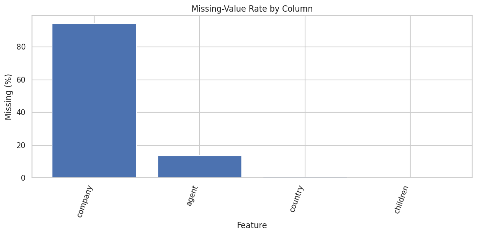
Missing values are preserved until imputation is fit on training data.
Duplicate-removal sensitivity
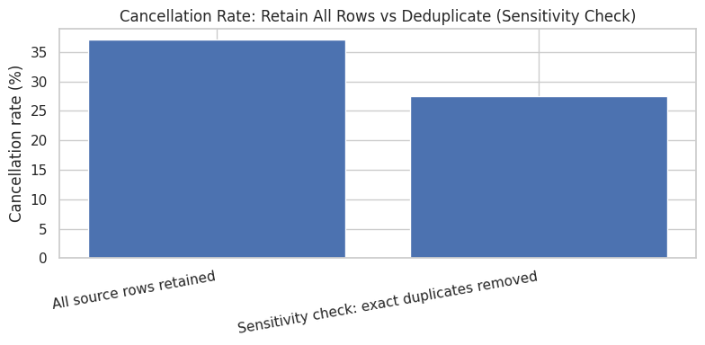
The duplicate signature is used only to keep matching predictor rows in one partition; it is not a model feature.
Cancellation target and hotel type
SOURCE TARGET
37.04% of source bookings were canceled
75,166 bookings are not canceled (62.96%); 44,224 are canceled (37.04%).
HOTEL TYPE
City Hotel has the higher observed rate
| Hotel | Bookings | Canceled |
|---|---|---|
| City Hotel | 79,330 | 41.73% |
| Resort Hotel | 40,060 | 27.76% |
Original target distribution
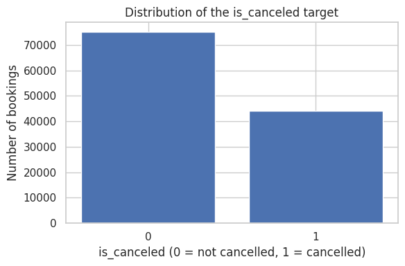
The later test period has a different cancellation share, which matters for temporal evaluation.
Cancellation rate by hotel type
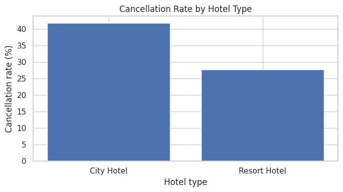
This describes an association in this dataset, not a causal effect.
Numerical features and unusual values
DISTRIBUTIONS
Lead time and ADR have long right tails
Lead time ranges from 0 to 737 days. ADR ranges from -6.38 to 5,400 in raw data. Guest counts and stay lengths are concentrated at small values.
IQR REVIEW
Flags prompt review, not deletion
The IQR rule flags 3,005 lead-time observations (2.52%) and 3,793 ADR observations (3.18%). The notebook retains plausible long booking windows and high rates, while correcting one negative ADR.
Key numeric feature distributions
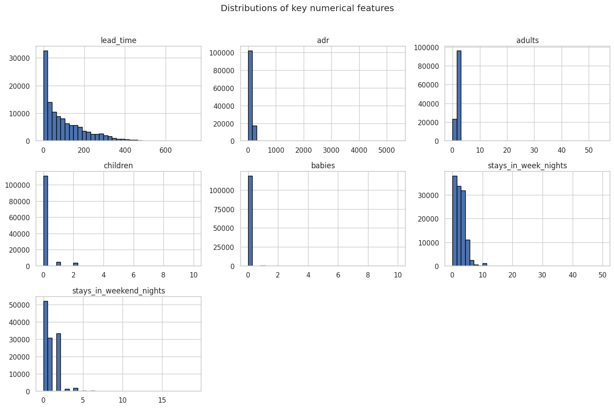
The distributions inform validation and preprocessing decisions.
Lead-time outlier inspection
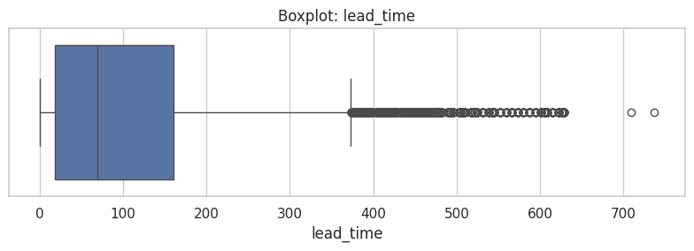
Long advance bookings may be genuine; IQR flags alone do not justify removal.
ADR outlier inspection
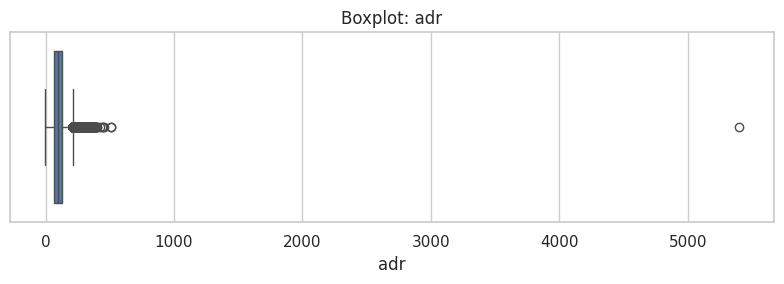
The negative ADR is invalid and converted to missing; high positive values are retained.
Categorical cancellation patterns
DEPOSIT POLICY
Non-refundable bookings show a 99.36% rate
Rates: Non Refund 99.36% (14,587 bookings); No Deposit 28.38% (104,641); Refundable 22.22% (162). The small Refundable group needs cautious interpretation.
CUSTOMER & MARKET
Rates vary across recorded groups
Transient customers: 40.75% (89,613); Group customers: 10.23% (577). Groups market segment: 61.06% (19,811); Direct: 15.34% (12,606). Group sizes differ.
Cancellation rate by deposit type
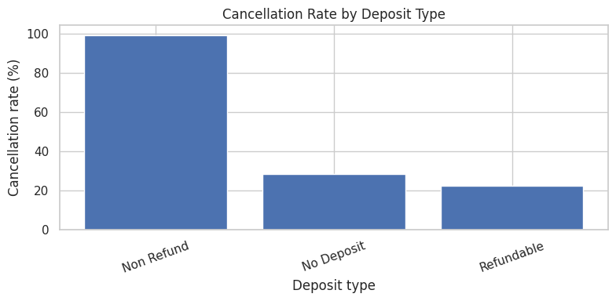
Rates are descriptive; the Refundable category contains 162 bookings.
Cancellation rate by arrival month
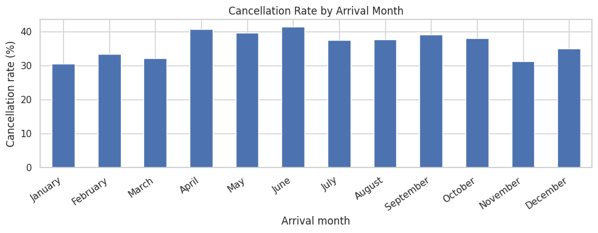
The chart combines years and does not separate seasonal effects from year changes or booking mix.
Numeric summary (20 source fields)
| Feature | Count | Mean | Std. | Min | Median | Max |
|---|---|---|---|---|---|---|
is_canceled | 119,390 | 0.370 | 0.483 | 0 | 0 | 1 |
lead_time | 119,390 | 104.01 | 106.86 | 0 | 69 | 737 |
arrival_date_year | 119,390 | 2016.16 | 0.71 | 2015 | 2016 | 2017 |
arrival_date_week_number | 119,390 | 27.17 | 13.61 | 1 | 28 | 53 |
arrival_date_day_of_month | 119,390 | 15.80 | 8.78 | 1 | 16 | 31 |
stays_in_weekend_nights | 119,390 | 0.93 | 1.00 | 0 | 1 | 19 |
stays_in_week_nights | 119,390 | 2.50 | 1.91 | 0 | 2 | 50 |
adults | 119,390 | 1.86 | 0.58 | 0 | 2 | 55 |
children | 119,386 | 0.10 | 0.40 | 0 | 0 | 10 |
babies | 119,390 | 0.01 | 0.10 | 0 | 0 | 10 |
is_repeated_guest | 119,390 | 0.03 | 0.18 | 0 | 0 | 1 |
previous_cancellations | 119,390 | 0.09 | 0.84 | 0 | 0 | 26 |
previous_bookings_not_canceled | 119,390 | 0.14 | 1.50 | 0 | 0 | 72 |
booking_changes | 119,390 | 0.22 | 0.65 | 0 | 0 | 21 |
agent | 103,050 | 86.69 | 110.77 | 1 | 14 | 535 |
company | 6,797 | 189.27 | 131.66 | 6 | 179 | 543 |
days_in_waiting_list | 119,390 | 2.32 | 17.59 | 0 | 0 | 391 |
adr | 119,390 | 101.83 | 50.54 | -6.38 | 94.575 | 5,400 |
required_car_parking_spaces | 119,390 | 0.06 | 0.25 | 0 | 0 | 8 |
total_of_special_requests | 119,390 | 0.57 | 0.79 | 0 | 0 | 5 |
Categorical summary (cancellation rate by group)
| Feature | Category | Bookings | Cancellation rate |
|---|---|---|---|
| Deposit type | Non Refund | 14,587 | 99.36% |
| Deposit type | No Deposit | 104,641 | 28.38% |
| Deposit type | Refundable | 162 | 22.22% |
| Market segment | Undefined | 2 | 100.00% |
| Market segment | Groups | 19,811 | 61.06% |
| Market segment | Online TA | 56,477 | 36.72% |
| Market segment | Offline TA/TO | 24,219 | 34.32% |
| Market segment | Aviation | 237 | 21.94% |
| Market segment | Corporate | 5,295 | 18.73% |
| Market segment | Direct | 12,606 | 15.34% |
| Market segment | Complementary | 743 | 13.06% |
| Customer type | Transient | 89,613 | 40.75% |
| Customer type | Contract | 4,076 | 30.96% |
| Customer type | Transient-Party | 25,124 | 25.43% |
| Customer type | Group | 577 | 10.23% |
| Hotel | City Hotel | 79,330 | 41.73% |
| Hotel | Resort Hotel | 40,060 | 27.76% |
| Meal | FB | 798 | 59.90% |
| Meal | BB | 92,310 | 37.38% |
| Meal | SC | 10,650 | 37.24% |
| Meal | HB | 14,463 | 34.46% |
| Meal | Undefined | 1,169 | 24.47% |
03 / FEATURE AUDIT & DATA PROCESSING
Only use what is known at booking time.
All 32 source columns are audited before building the 24-feature matrix.
Keep booking-time inputs
Hotel, lead time, requested arrival date, stay length, guest counts, meal, country, market and distribution channels, guest history, reserved room type, deposit type, customer type, and conditionally ADR.
Transform identifiers
Convert sparse company to has_company and remove the raw ID. Treat agent as categorical, not continuous. The matrix has 14 numeric and 10 categorical inputs.
Exclude future information
Exclude assigned room type, booking changes, waiting-list days, parking spaces, special requests, reservation status, and status date. is_canceled is target-only; status fields reveal the outcome.
Retain rows; validate values
All 119,390 rows and valid binary target labels are retained. Convert one negative ADR to missing. Before imputation, missing values remain in agent (16,340), country (488), children (4), and ADR (1). There are 35,435 repeated predictor signatures; matching signatures are grouped into one partition.
ADR timing assumption
ADR is included only if it is the rate known or quoted at booking creation. If it is finalized after the stay, remove it and rerun the workflow.
Preprocessing is learned from training data
Numeric inputs use median imputation and standard scaling. Categorical inputs receive a “Missing” category and one-hot encoding with unknown categories ignored. Every transformation is fitted inside the pipeline on train only.
Training-only scaling diagnostic
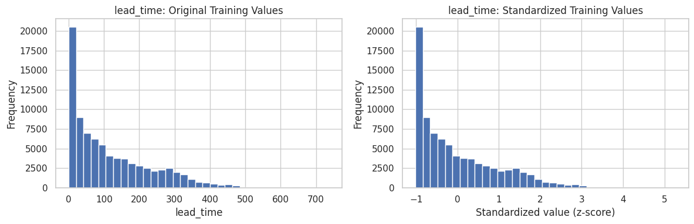
Scaling supports Logistic Regression; Random Forest is generally insensitive to monotonic scaling.
04 / CHRONOLOGICAL DATA SPLIT
Evaluate against later bookings.
Bookings are ordered by estimated creation date to approximate future deployment.
Temporal shift is visible
The later test period has a lower cancellation rate than train and validation. This shift is part of the evaluation, not hidden by random stratification. Identical predictor signatures are disjoint across partitions.
Target balance by partition
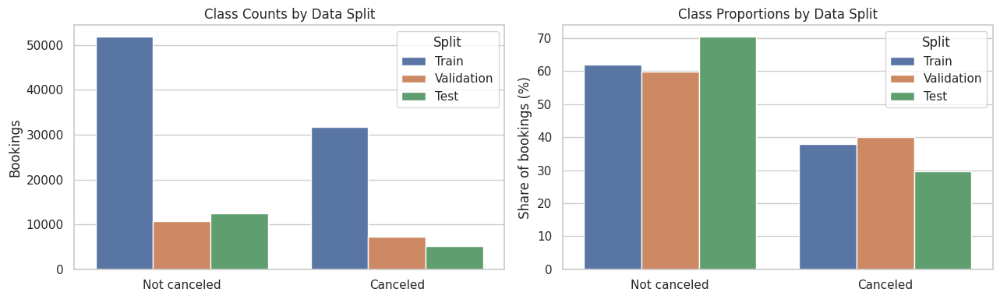
Class proportions vary over time, especially in the test period.
Selected category distributions
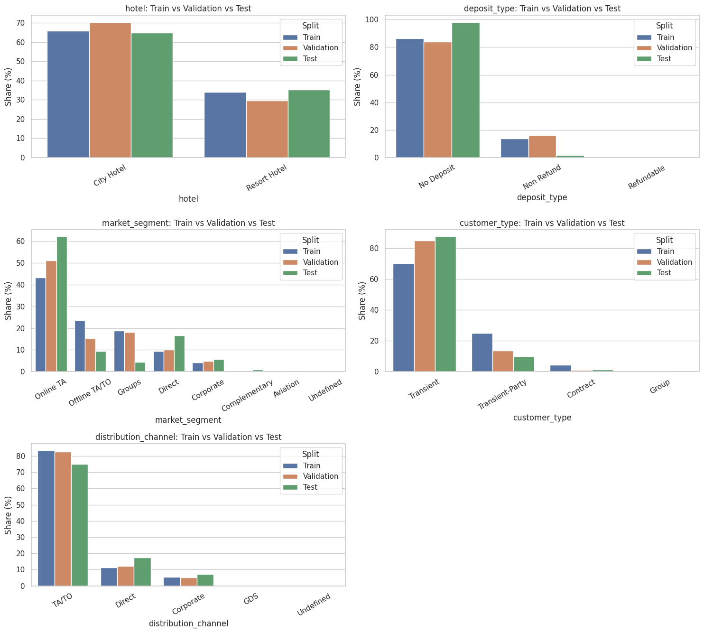
Compare period-specific composition when interpreting performance differences.
05 / MODEL SELECTION
Compare a baseline before the forest.
Both pipelines are fit on train; validation is used for model comparison and threshold selection.
LOGISTIC REGRESSION · VALIDATION
Baseline
| Metric | Score |
|---|---|
| Accuracy | 0.7478 |
| Precision | 0.6364 |
| Recall | 0.8631 |
| F1 | 0.7326 |
| ROC-AUC | 0.8686 |
| PR-AUC | 0.8359 |
RANDOM FOREST · VALIDATION
Selected model
| Metric | Score |
|---|---|
| Accuracy | 0.7885 |
| Precision | 0.6875 |
| Recall | 0.8649 |
| F1 | 0.7661 |
| ROC-AUC | 0.8940 |
| PR-AUC | 0.8643 |
Random Forest settings: 300 trees, max_features="sqrt", min_samples_leaf=2, and balanced subsample class weights. Numeric features use median imputation and scaling; categorical features use a Missing category and one-hot encoding. Preprocessing is fitted on train only.
Validation model comparison
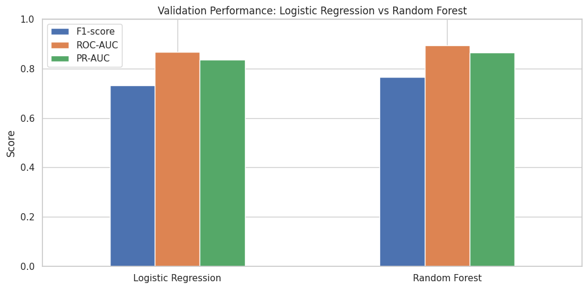
Random Forest leads on the three displayed validation metrics.
Threshold selection on validation
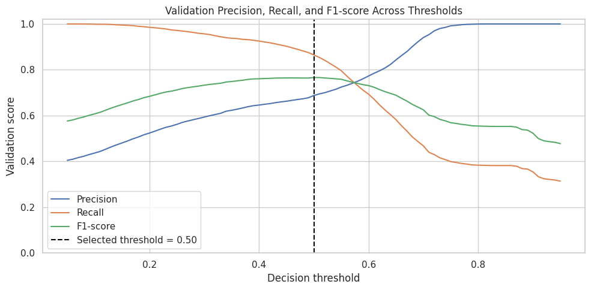
The selected 0.50 threshold maximizes validation F1 (0.7661). Test labels are not used for threshold tuning.
06 / FINAL TEST EVALUATION
Random Forest results on later bookings.
One final evaluation on the untouched 17,769-record test period, using the validation-selected 0.50 threshold.
Precision and recall trade-off
Recall (73.71%) is higher than precision (54.45%): the model finds about three quarters of cancellations, but a substantial share of cancellation alerts are false positives. Operational action should account for this trade-off.
TEST CONFUSION MATRIX
Predictions at threshold 0.50
| Actual | Predicted: not canceled | Predicted: canceled |
|---|---|---|
| Not canceled · 12,512 | 9,271 74.09% · true negatives | 3,241 25.91% · false positives |
| Canceled · 5,257 | 1,382 26.29% · false negatives | 3,875 73.71% · true positives |
RANDOM FOREST
Most important encoded features
- Country: PRT11.45%
- Lead time9.61%
- Deposit: No Deposit8.51%
- Deposit: Non Refund8.37%
- Previous cancellations5.52%
- ADR4.56%
- Arrival day2.59%
- Arrival week2.57%
- Agent: 92.51%
- Arrival year2.50%
Impurity importance is model-specific and not causal; one-hot category values are separate features.
Test-set diagnostics
Charts are saved outputs from the revised notebook workflow.
Normalized confusion matrix
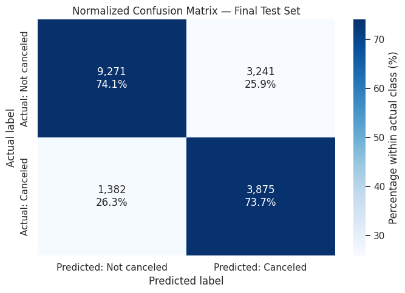
ROC curve
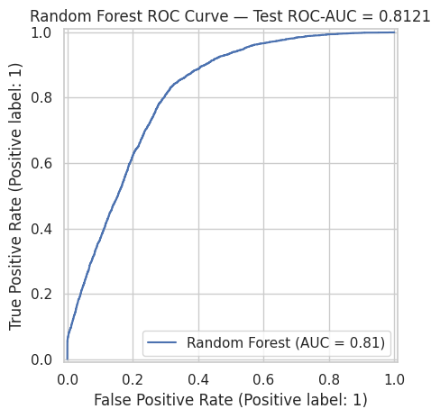
Test ROC-AUC: 0.8121.
Precision-recall curve
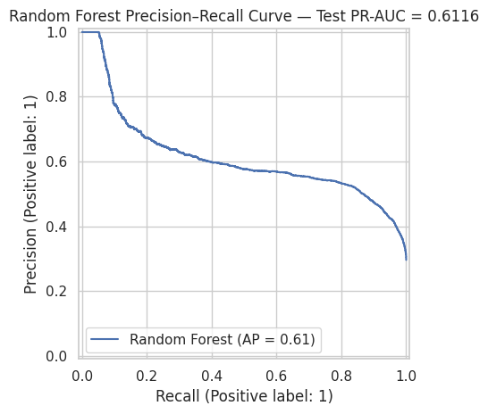
Test PR-AUC: 0.6116.
Predicted probability by actual outcome
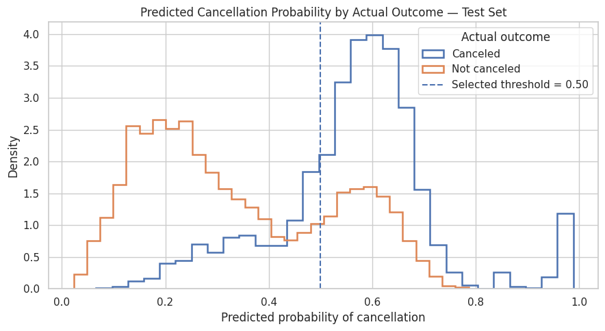
The two distributions overlap, resulting in both false alarms and missed cancellations.
Probability calibration
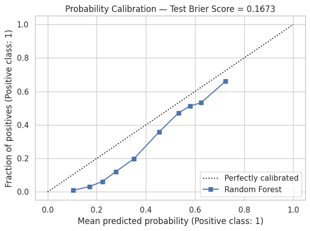
Brier score: 0.1673.
Correct predictions and errors
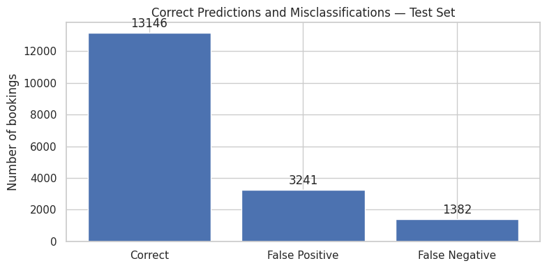
13,146 correct; 3,241 false positives; 1,382 false negatives.
Top 20 feature importances
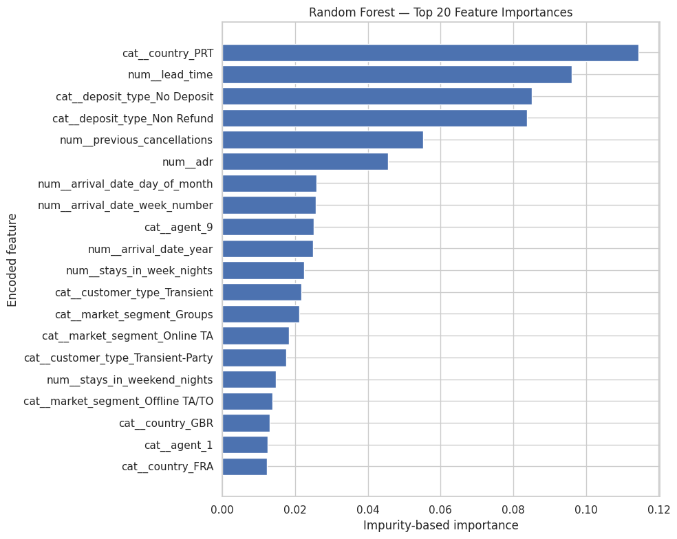
07 / INTERPRETATION & LIMITATIONS
Read the result with care.
The revised workflow improves temporal evaluation and leakage control, but does not guarantee production performance.
Temporal mix changes
Cancellation rates are 37.98% in train, 40.04% in validation, and 29.59% in test. The later-period shift helps explain why test scores are lower than validation scores.
Verify feature availability
The audit assumes prediction at booking creation. ADR is included only if the quoted rate is known then; otherwise remove it and retrain.
Duplicates need provenance
Exact duplicate rows remain because the data has no unique booking ID. Grouping signatures across splits prevents a known form of leakage, but does not prove duplicates are valid distinct bookings.
Choose thresholds for operations
The 0.50 threshold maximizes validation F1 in this saved run. A hotel should weigh missed cancellations against unnecessary alerts and validate the chosen threshold on future data.
The reported metrics describe one chronological holdout and one model run. They are not causal effects or a production guarantee.
08 / PROJECT DETAILS
Project: Hotel Booking Cancellation Prediction
Model artifact: hotel_booking_cancellation_random_forest.joblib
Validation-selected threshold: 0.50
Dataset: Hotel Booking Demand